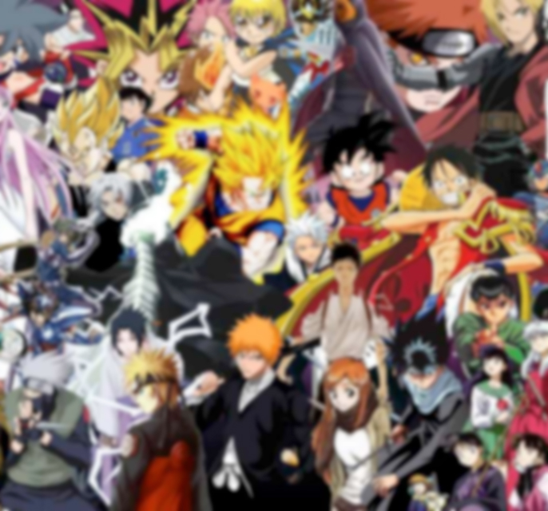
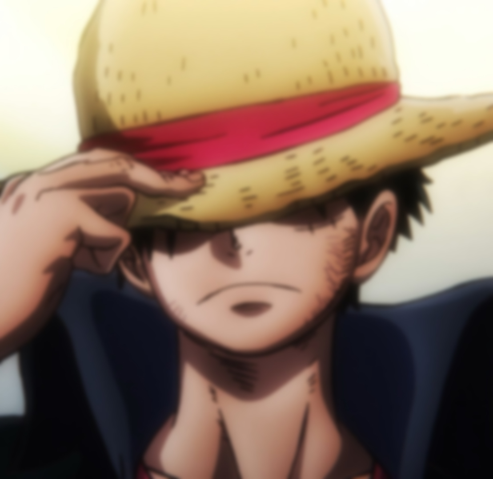
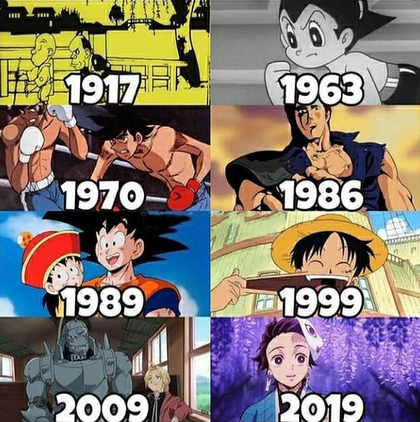
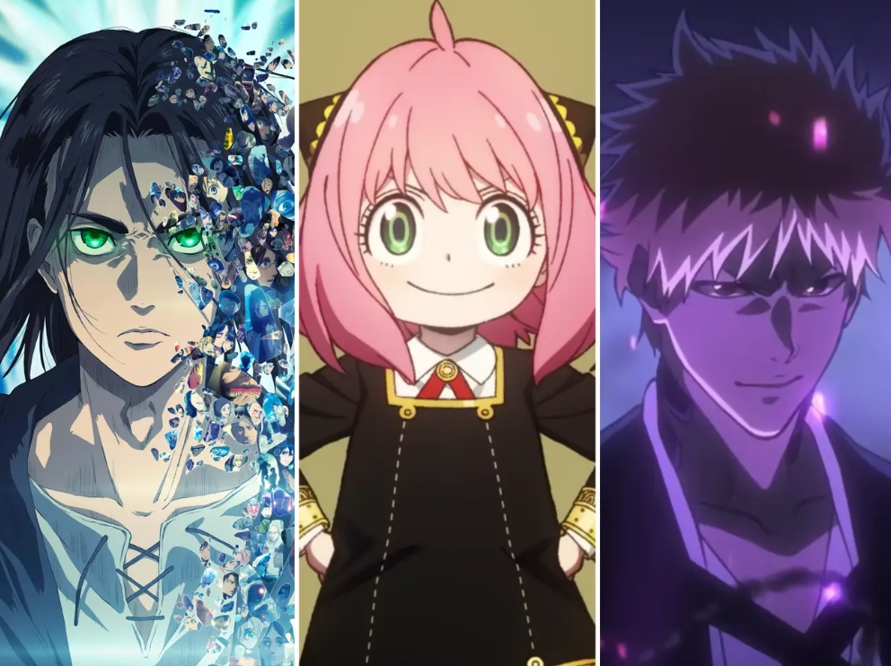
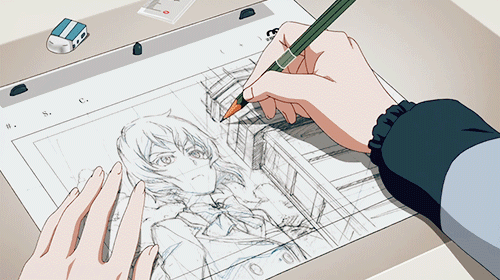
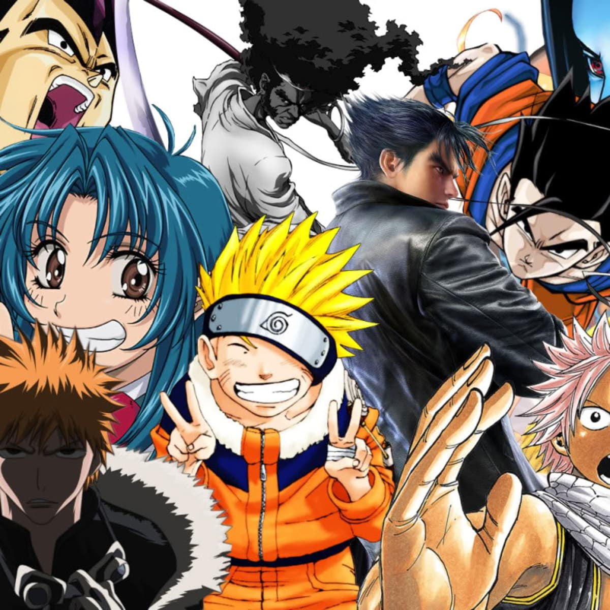

Šta je to Anime?

Kako nastaje Anime?

Istorija Animea?

Dobrodošli!
Šta je to Anime?
Anime (アニメ) je stil crtane animacije poreklom iz Japana, sa karakterističnom stilizacijom likova i pozadine, koja ga vizuelno odvaja od drugih vidova animacije. Reč anime dolazi od japanske reči animeshōn (アニメーション) zasnovane na engleskoj reči animation. Dok su neki anime naslovi u potpunosti ručno crtani, pomoć računara u procesu stvaranja animea je potpuno uobičajena. Priče i likovi su obično izmišljeni . Anime se emituje preko televizije, distribuira na medijima kao što su VHS ili DVD i preko igara za konzole ili računare. Mnoga anime dela su nastala pod uticajem japanskog stripa poznatog kao manga. Neki anime naslovi su adaptirani u igrane filmove i serije.Manga i Anime su doživele veliku popularnost i prihvaćenost u celom svetu. Statistike su pokazale da ovaj svet stripova i animiranih filmova obezbedio tržiste koje obrće milijarde dolara.
Kako nastaje Anime?
Stil crtanja koji je korišćen u animeu koji je stvoren za televiziju je kontraproduktivan procesu animacije. Anime stil ima naglasak na detaljima koji kasnije stvarju teškoće da se ispoštuje produkcijski raspored i budžet, što je kontrast stilovima animacije koji imaju dizajnersku etiku koja naglašava jednostavnost.Anime stil se karakteriše senčenjem, crtanjem kose u odvojenim pramenovima, karakterističnim načinom crtanja očiju, i "manama lica" u animaciji. Mane lica uključuju, naprimer, izražavanje besa tako što kod lika iskoče vene na čelu, izražavanjem stida prikazivanjem kako se lik znoji ispuštajući masivne kapi znoja, itd ... Na osnovu priče, ključni animatori počinju sa radom, kreirajući crteže animacije. Dodeljuje im se određeni broj različitih rezova od strane osobe zadužene za ključnu animaciju. Ključni animatori crtaju bitne kadrove koji obeležavaju posebnu poziciju ili izraz lika.
Istorija Animea?
Istorija animea počinje početkom 20. veka, kada su japanski tvorci filmova eksperimentisali sa tehnikama animacije koje su prethodno bile razvijene na zapadu. Tokom sedamdesetih, anime se dalje razvijao, odvajajući se od svojih zapadnjačkih uzora i razvijajući jedinstvene žanrove kao što je „meka“. Osamdesetih godina, anime je prihvaćen kao mejnstrim i doživeo je pravi bum u proizvodnji. Od devedesetih naovamo, anime je prihvaćen i u drugim zemljama. Veliki deo rada u ranim godinama nije bio tehnika celom animacije koja bi postala dominantna tehnika proizvodnje, već niz drugih metoda: crteži na tabli, slika direktno na filmu, izrezi papira i tako dalje. Jednom po jednu, mnoge tehnologije koje su se danas koristile dodato je japanskim animiranim produkcijama - zvukom (i na kraju boje); višestruki sistem kamere; i cel animacija.
